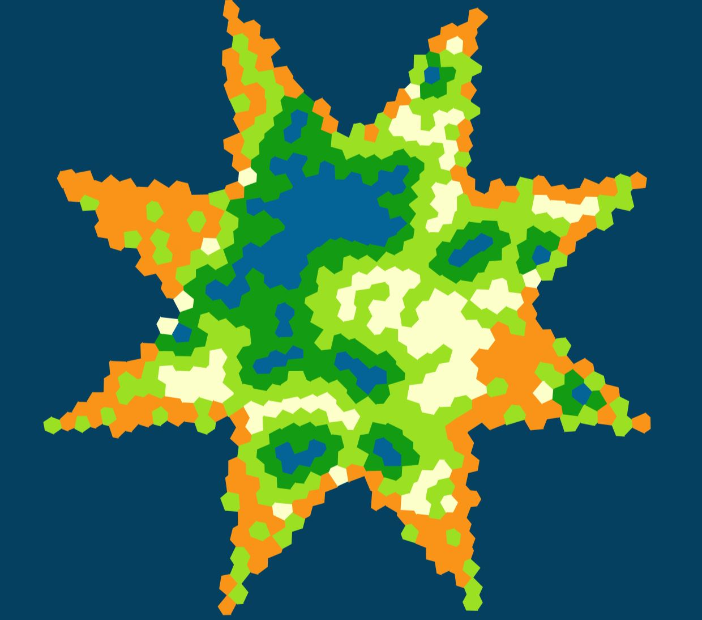

I'm a 4th-year Software Engineering COOP student at McMaster University.
Currently scouting for new grad jobs, I am eager to engineer effective and creative solutions to real-world problems.
A passionate continuous learner, I stay updated on industry trends & technologies and seek insight from experts.
Below is an exhibit of my experiences and creations, feel free to browse at your leisure, and enjoy!

Worked as a software developer for 1 year at the prestigious automotive company General Motors, collaborating with a team of 9 people to enable an end-to-end
testing pipeline for vehicle software. In addition, we developed a high-performance web app for visualizing millions of data points in less than 2 seconds,
utilizing the latest technologies of Apollo Server and ReactJS. I also conducted testing for vehicle brake-by-wire software as well as suspension software using CppU.
January 2024 - December 2024

Competing with 1 Canadian and 11 American universities, I am a member of the McMaster EcoCAR team working in the largest automotive research center in North America.
We are actively developing adaptive cruise control and other systems for the Cadillac Lyriq to reach SAE Level 2 autonomy, which entails the use of machine learning.
September 2023 - Present

Generates an island with settlements connected to each other via the shortest paths. The shortest path feature was created by implementing Dijkstra's algorithm and creating a graph abstract data structure. It takes < 1 second to create and connect 1000 settlements.
Languages, Frameworks, and Tools Used:
Java, Maven, JUnit, ApacheCLI, JTS Library
April 2023 - May 2023

Led a team of 3 people to develop an industry standard procedural terrain generator that creates highly customizable islands built on top of meshes. With a seeding system built in(like in Minecraft) to recreate previous islands, the user can customize the island's shape, humidity, vegetation, water bodies, etc.
Languages, Frameworks, and Tools Used:
Java, Maven, JUnit, ApacheCLI, JTS Library
February 2023 - April 2023

Created a web application that allows Destiny 2 players to view their character equipment. With an easy-to-use UI, it is the ultimate tool for Destiny players to quickly check their characters.
Languages, Frameworks, and Tools Used:
PHP, HTML5, CSS, Git, Postman
January 2023 - February 2023
A game created using the Godot game engine, where the player embarks on a quest to free the land from ferocious beasts. With 3 levels, 4 enemy types, and 3 environments, the game received widespread praise from friends and family.
Languages, Frameworks, and Tools Used:
Godot, GDScript
January 2021 - February 2021

Led a team of 5 people to create a specialized foot pedal for a client with Ehlers-Danlos syndrome to facilitate usage of their computer. Utilizing an Arduino Leonardo and Python code, the foot pedal translates gentle pressure into desired keystrokes.
Languages, Frameworks, and Tools Used:
Python
March 2022 - April 2022